perfil do Robôterista Paul · calendário de 12/nov a 13/dez de 2026
bio e link
aprenda música jogando 🎧🥁
jogos + apostilas da Bea
sou o Paul, assistente robô da professora Bea
👇 jogue grátis agora
jogos.beaterista.com.br
Montar a casa
Semana 0 · 12 a 15 de novembro
qui 12/novconfigurar—
legenda
BIO (copiar):
aprenda música jogando 🎧🥁
jogos + apostilas da Bea
sou o Paul, assistente robô da professora Bea
👇 jogue grátis agora
jogos.beaterista.com.br
story: Destaques: jogar · apostilas · álbum · bastidores (use a capa B1 e fundo creme).
chamada: trocar a foto e colocar o link
sex 13/novcarrossel19h30
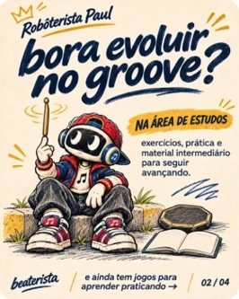
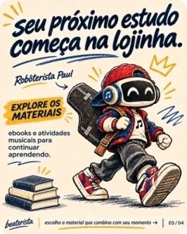
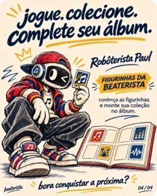
legenda
oi, eu sou o Paul 🤖🎧
assistente de música da professora Bea.
vim te chamar pra aprender jogando: ritmo, notas, acordes e até figurinhas pra colecionar.
arrasta pro lado e vem comigo ➡️
segue @jogos.beaterista e joga grátis no link da bio 🥁
#aulademusica #musicaparacriancas #aprendermusica #bateria #teoriamusical #jogosmusicais #robôterista #beaterista
story: Story: arte S1 + enquete "você já tocou algum instrumento? sim / ainda não".
chamada: seguir o perfil
sáb 14/novstory12h
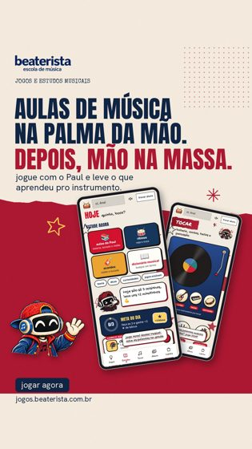
legenda
(sem legenda de feed)
story: Story S1 + caixinha de pergunta: "qual instrumento você quer aprender?".
chamada: link na bio
dom 15/novfeed19h30
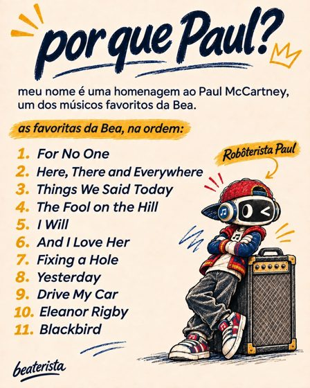
legenda
por que Paul? 🎸
meu nome é uma homenagem ao Paul McCartney, um dos músicos favoritos da Bea.
e você, qual música dele é a sua favorita? me conta aqui embaixo 👇
#aulademusica #musicaparacriancas #aprendermusica #bateria #teoriamusical #jogosmusicais #robôterista #beaterista
story: Story: repostar o feed com sticker de enquete "conhece o Paul McCartney?".
chamada: comentar
Apresentar o jogo
Semana 1 · 16 a 22 de novembro
seg 16/novfeed12h
legenda
aulas de música na palma da mão 📱
depois, mão na massa. 🥁
jogue com o Paul, treine ritmo e leitura de notas e leve o que aprendeu pro instrumento.
grátis no link da bio: jogos.beaterista.com.br
#aulademusica #musicaparacriancas #aprendermusica #bateria #teoriamusical #jogosmusicais #robôterista #beaterista
story: Story: print do app + "qual jogo você quer ver primeiro?".
chamada: link na bio
ter 17/novstory12h
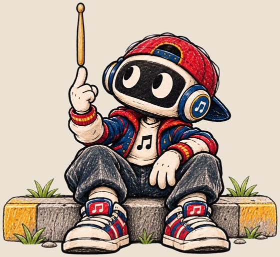
legenda
(só story)
story: Paul com a baqueta: "bora testar seu ritmo? 🥁" + caixinha "quer ver o jogo na tela?".
chamada: link
qua 18/novreel19h30
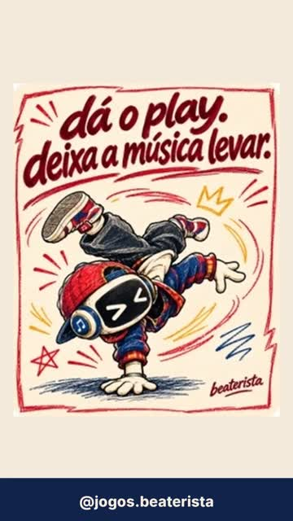
legenda
3 minutos, 4 frases do Paul pra você começar a semana com mais groove 🎧
salva esse reel e manda pra quem toca (ou quer tocar)!
#aulademusica #musicaparacriancas #aprendermusica #bateria #teoriamusical #jogosmusicais #robôterista #beaterista
story: Story: repostar o reel com "qual frase é a sua?".
chamada: salvar e enviar
qui 19/novstory12h
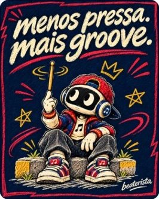
legenda
(só story)
story: "menos pressa. mais groove." + sticker de música.
chamada: —
sex 20/novfeed19h30
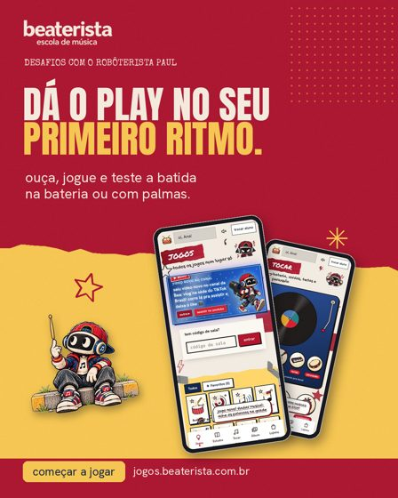
legenda
jogue. toque. colecione. 🎮🎸🏆
encare os desafios do Paul e complete o seu álbum musical.
tem figurinha, ranking e jogos de ritmo, tudo no link da bio.
#aulademusica #musicaparacriancas #aprendermusica #bateria #teoriamusical #jogosmusicais #robôterista #beaterista
story: Story: sticker "quem joga comigo?" convidando a marcar um amigo.
chamada: marcar um amigo
sáb 21/novstory12h
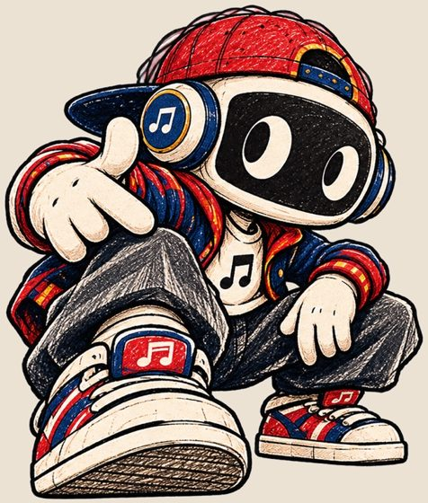
legenda
(só story)
story: Quiz: "essa nota é dó ou ré?" (use a enquete do story).
chamada: responder
dom 22/novfeed19h30
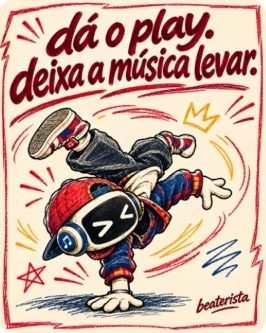
legenda
dá o play, deixa a música levar. 🎧
estudar música não precisa ser pesado: 10 minutinhos por dia já fazem diferença. salva esse post pra lembrar de treinar hoje 💛
#aulademusica #musicaparacriancas #aprendermusica #bateria #teoriamusical #jogosmusicais #robôterista #beaterista
story: Story: lembrete "10 minutos de música hoje".
chamada: salvar
Black Friday (sexta 27)
Semana 2 · 23 a 29 de novembro
seg 23/novfeed12h
legenda
a Bea ensina, eu treino com você! 📚🤖
logo, logo tem novidade pra quem quer levar a prática pra fora da tela: apostilas pra imprimir, feitas pela professora Bea.
ativa o 🔔 e fica ligado!
#aulademusica #musicaparacriancas #aprendermusica #bateria #teoriamusical #jogosmusicais #robôterista #beaterista
story: Story: "sexta tem uma surpresa 👀".
chamada: ativar notificações
ter 24/novstory12h
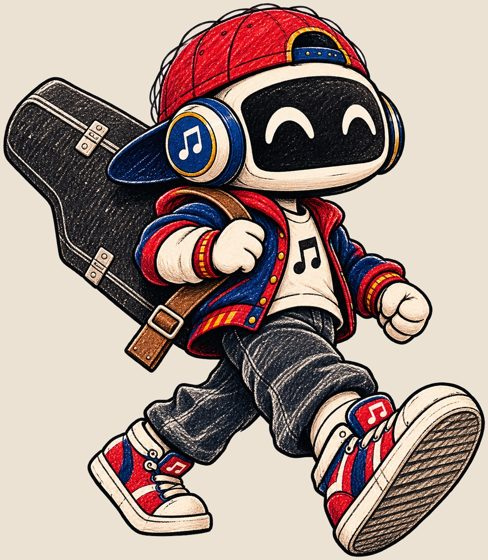
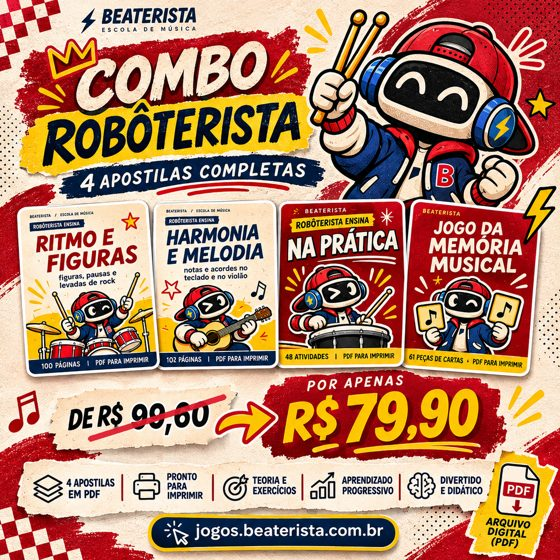
legenda
(só story)
story: Contagem regressiva: "sexta é Black Friday 🖤" com sticker de lembrete.
chamada: lembrete
qua 25/novfeed19h30
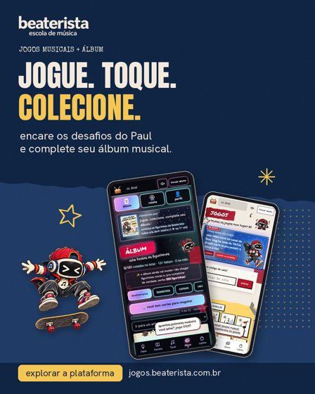
legenda
o que vem na apostila Robôterista? 👀
Ritmo e Figuras, Harmonia e Melodia, Na Prática e o Jogo da Memória Musical: material em PDF pra imprimir e estudar quando quiser.
sexta: Black Friday 🖤
#aulademusica #musicaparacriancas #aprendermusica #bateria #teoriamusical #jogosmusicais #robôterista #beaterista
story: Story: caixinha "qual apostila você quer ver por dentro?".
chamada: lembrete
qui 26/novstory12h
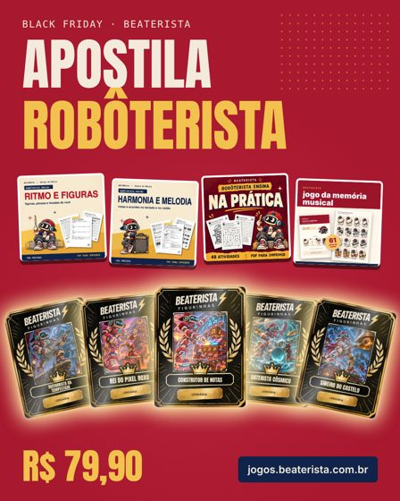
legenda
(só story)
story: Arte do kit: "amanhã: combo com as 4 apostilas" + lembrete.
chamada: lembrete
sex 27/novfeed + reel12h e 19h30
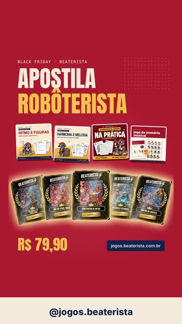
legenda
🖤 BLACK FRIDAY BEATERISTA 🖤
COMBO ROBÔTERISTA: 4 apostilas em PDF por R$ 79,90 (de R$ 99,60)
✅ Ritmo e Figuras
✅ Harmonia e Melodia
✅ Na Prática
✅ Jogo da Memória Musical
materiais digitais pra imprimir e estudar. compra pela Hotmart, link na bio.
#aulademusica #musicaparacriancas #aprendermusica #bateria #teoriamusical #jogosmusicais #robôterista #beaterista #blackfriday
story: Story ×3: arte do combo, contagem "termina segunda" e print de depoimento (com permissão).
chamada: link da página de vendas
sáb 28/novstory12h, 17h e 21h
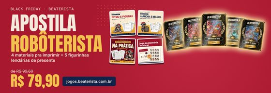
legenda
(só story)
story: Lembrete de que o preço vai até segunda + caixinha "dúvidas sobre o combo?".
chamada: link
dom 29/novcarrossel19h30
legenda
um combo, quatro jeitos de aprender música 🎼
1 · Ritmo e Figuras (100 páginas)
2 · Harmonia e Melodia (102 páginas)
3 · Na Prática (48 atividades)
4 · Jogo da Memória Musical (61 pares)
R$ 79,90 até segunda 🖤
#aulademusica #musicaparacriancas #aprendermusica #bateria #teoriamusical #jogosmusicais #robôterista #beaterista
story: Story: "amanhã é o último dia do preço".
chamada: link
Cyber Monday e lendárias
Semana 3 · 30 de nov a 6 de dez
seg 30/novfeed + story12h
legenda
últimas horas do combo Robôterista 🖤
4 apostilas por R$ 79,90. depois de hoje volta ao preço normal.
link na bio.
#aulademusica #musicaparacriancas #aprendermusica #bateria #teoriamusical #jogosmusicais #robôterista #beaterista #cybermonday
story: Story: contagem de horas + link.
chamada: link
ter 1/dezstory12h
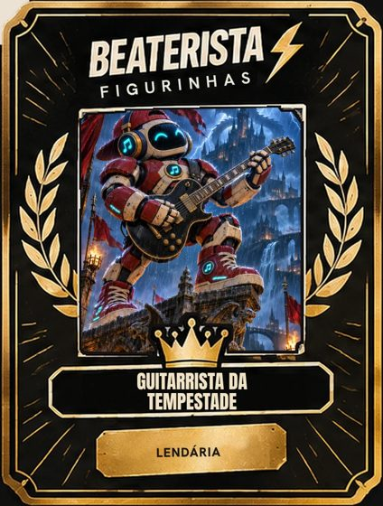
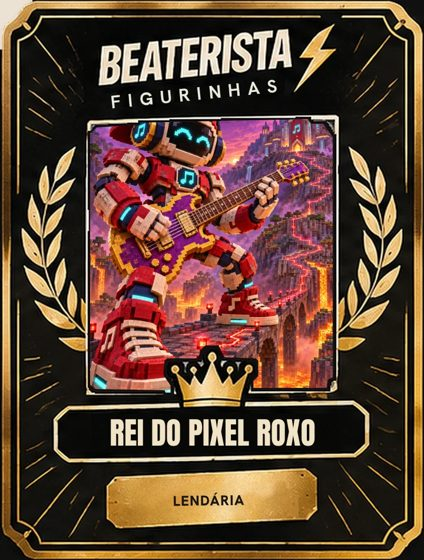
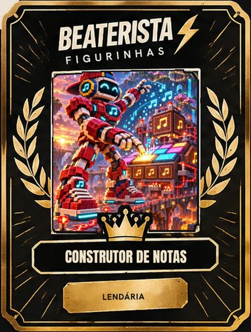
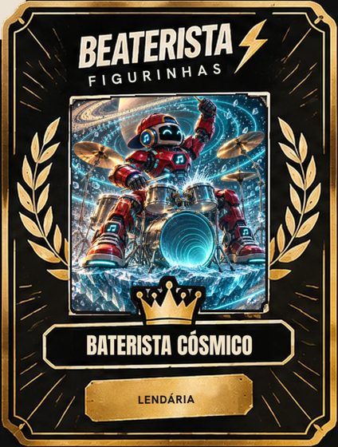
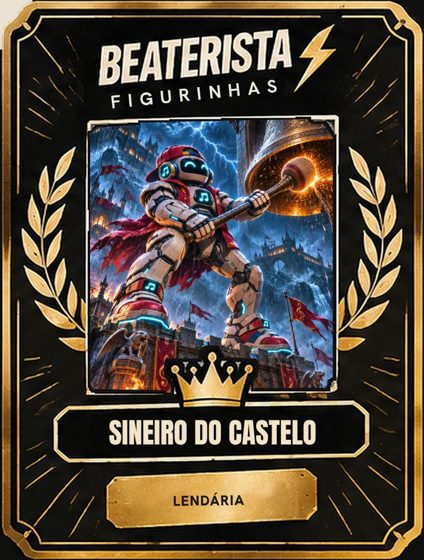
legenda
(só story, 1 lendária por story)
story: Mostra as 5 lendárias, uma por story, com o nome de cada uma. Só diga que vêm de brinde se o resgate estiver confirmado.
chamada: link
qua 2/dezfeed19h30
legenda
jogue. colecione. complete seu álbum. 🏆
cada jogo vale estrelas e figurinhas. tem comum, rara e lendária ✨ qual você quer primeiro?
#aulademusica #musicaparacriancas #aprendermusica #bateria #teoriamusical #jogosmusicais #robôterista #beaterista
story: Story: enquete "quer ver as lendárias?".
chamada: comentar
qui 3/dezreel19h30
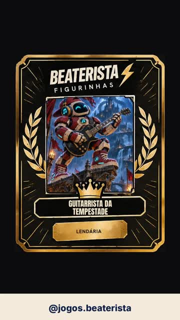
legenda
as 5 figurinhas lendárias do app ✨🤖
Guitarrista da Tempestade, Rei do Pixel Roxo, Construtor de Notas, Baterista Cósmico e Sineiro do Castelo.
como conseguir? chama no direct que eu explico 👇
#aulademusica #musicaparacriancas #aprendermusica #bateria #teoriamusical #jogosmusicais #robôterista #beaterista
story: Story: repostar o reel.
chamada: direct
sex 4/dezfeed19h30
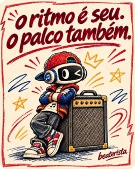
legenda
o ritmo é seu. o palco também. 🥁🎤
marca aquele amigo que merece subir no palco um dia.
#aulademusica #musicaparacriancas #aprendermusica #bateria #teoriamusical #jogosmusicais #robôterista #beaterista
story: Story: enquete "bateria, violão ou teclado?".
chamada: marcar
sáb 5/dezstory12h
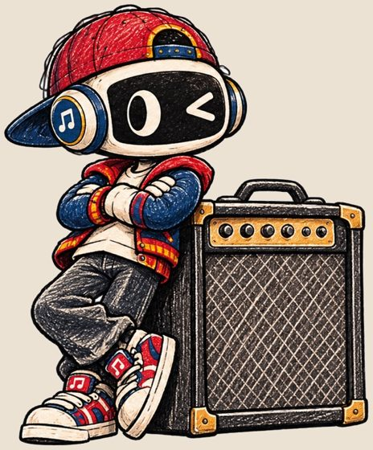
legenda
(só story)
story: Quiz musical + caixinha "qual jogo você quer que o Paul explique?".
chamada: responder
dom 6/dezfeed19h30
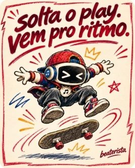
legenda
solta o play, vem pro ritmo. 🛹🎧
resumo da semana: jogos, figurinhas e dica de estudo. qual foi a sua parte favorita?
#aulademusica #musicaparacriancas #aprendermusica #bateria #teoriamusical #jogosmusicais #robôterista #beaterista
story: Story: "o que você quer ver semana que vem?".
chamada: comentar
Presentes e prova
Semana 4 · 7 a 13 de dezembro
seg 7/dezfeed12h
legenda
um jogo por dia, um pouquinho de música. 🎮
essa semana o Paul mostra jogos do app: ritmo, cartas, quebra-cabeça e mais. salva pra não esquecer!
#aulademusica #musicaparacriancas #aprendermusica #bateria #teoriamusical #jogosmusicais #robôterista #beaterista
story: Story: "jogo do dia" com print.
chamada: salvar
ter 8/dezstory12h
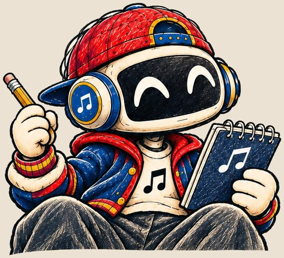
legenda
(só story)
story: Dica de estudo: 10 minutos por dia, anota no caderno 📓.
chamada: —
qua 9/dezcarrossel19h30
legenda
quem chegou agora? eu sou o Paul 🤖🎧 assistente da professora Bea.
aqui tem jogos de música, apostilas e figurinhas. começa pelo link da bio 👇
#aulademusica #musicaparacriancas #aprendermusica #bateria #teoriamusical #jogosmusicais #robôterista #beaterista
story: Story: caixinha de perguntas "o que você quer aprender?".
chamada: seguir
qui 10/dezreel19h30
legenda
conhece o Paul? 👋 aprender música jogando, com apostilas e figurinhas.
conta quem você marcaria pra aprender junto 👇
#aulademusica #musicaparacriancas #aprendermusica #bateria #teoriamusical #jogosmusicais #robôterista #beaterista
story: Story: repostar.
chamada: marcar
sex 11/dezfeed12h
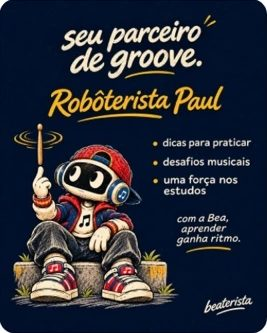
legenda
presente de Natal musical 🎁🎧
apostilas em PDF pra imprimir e estudar, sem frete e sem espera. o combo Robôterista continua disponível no link da bio.
#aulademusica #musicaparacriancas #aprendermusica #bateria #teoriamusical #jogosmusicais #robôterista #beaterista
story: Story: "presente de última hora" com a arte do combo.
chamada: link
sáb 12/dezstory12h
legenda
(só story)
story: Presente de última hora: o PDF chega na hora (só use se o desconto ainda valer).
chamada: link
dom 13/dezfeed19h30
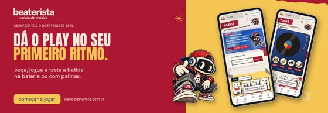
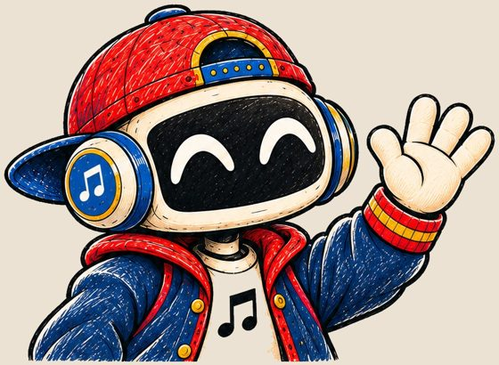
legenda
obrigado por esse começo, família! 🤖💛
em janeiro tem mais jogos, mais dicas e novidades. o que você quer ver por aqui? comenta 👇
#aulademusica #musicaparacriancas #aprendermusica #bateria #teoriamusical #jogosmusicais #robôterista #beaterista
story: Story: caixinha "o que você quer em janeiro?".
chamada: comentar
4 reels prontos
Paul se apresentapostar quinta 10/dezCarrossel de apresentação virando vídeo, 14 s. Sem som: escolha a música dentro do Instagram.Black Friday do combopostar sexta 27/novKit, combo e banner, 11 s. Sem som: escolha a música dentro do Instagram.As 5 lendáriaspostar quinta 3/dezCada lendária e o combo no final, 13 s. Sem som: escolha a música dentro do Instagram.Frases do Paulpostar quarta 18/nov5 cartazes de frase, 13 s. Sem som: escolha a música dentro do Instagram.
antes de postar
Os cartazes do Paul (carrossel e frases) só existem aqui em tamanho pequeno. Peça os originais em alta ao gerador das imagens para o Instagram não ficar embaçado.
Só prometa as lendárias de brinde com o resgate confirmado.
Horários são sugestões: veja no Insights qual funciona melhor.